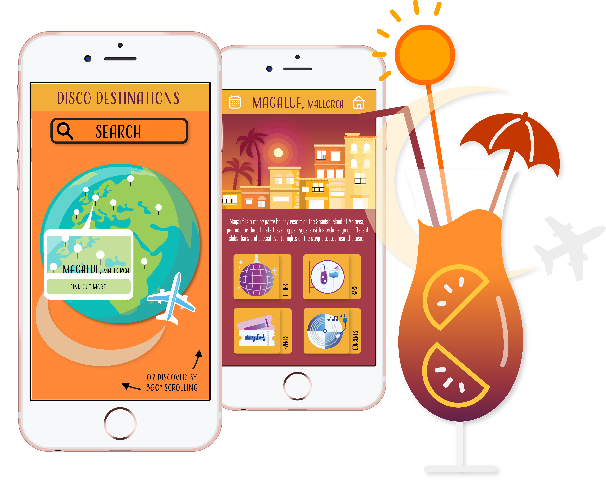
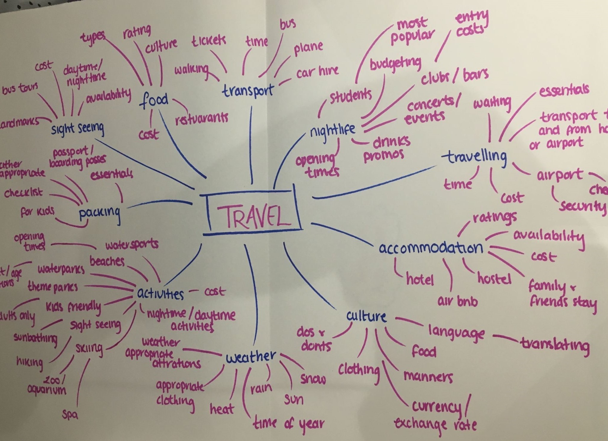
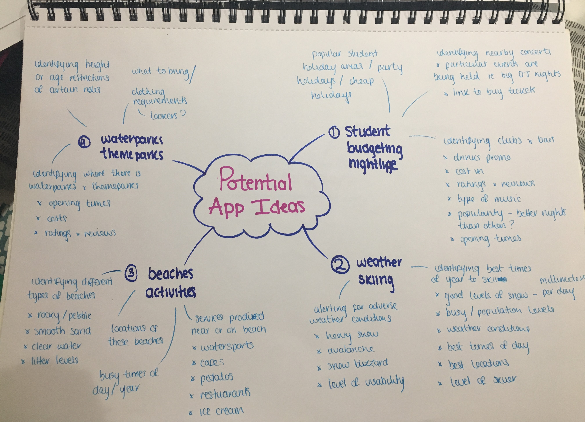
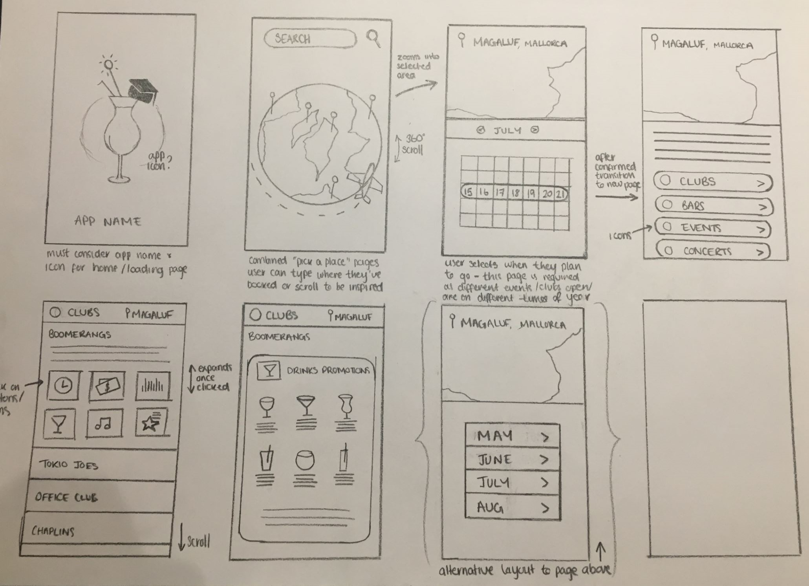
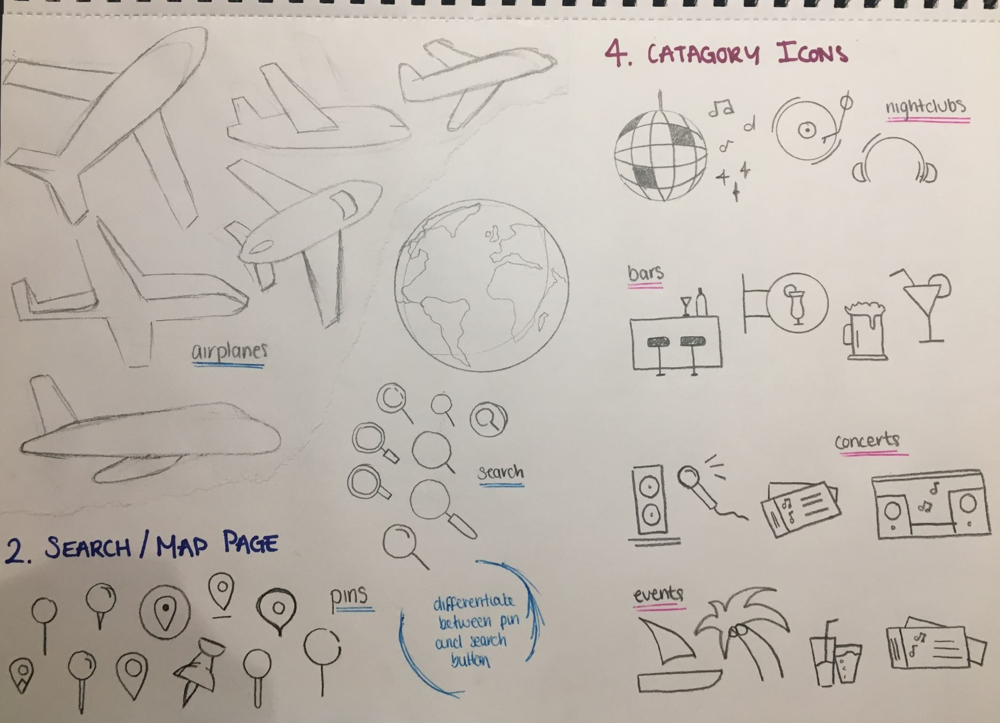
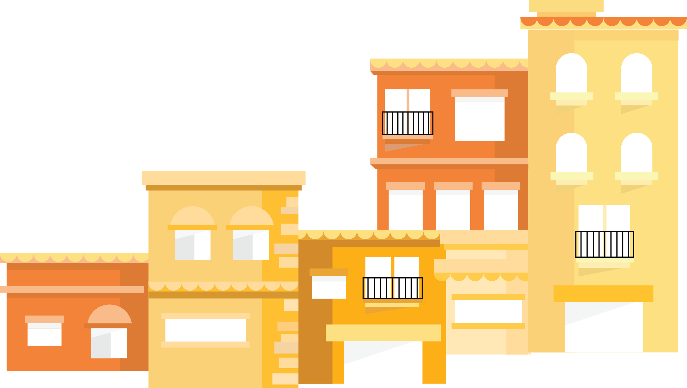

Disco Destinations
A mobile app providing all you need to know when planning a party holiday. The popular destinations, favourite clubs and must-go events.
Research Notes

Disco Destinations is the solution to plan your clubbing adventure!




